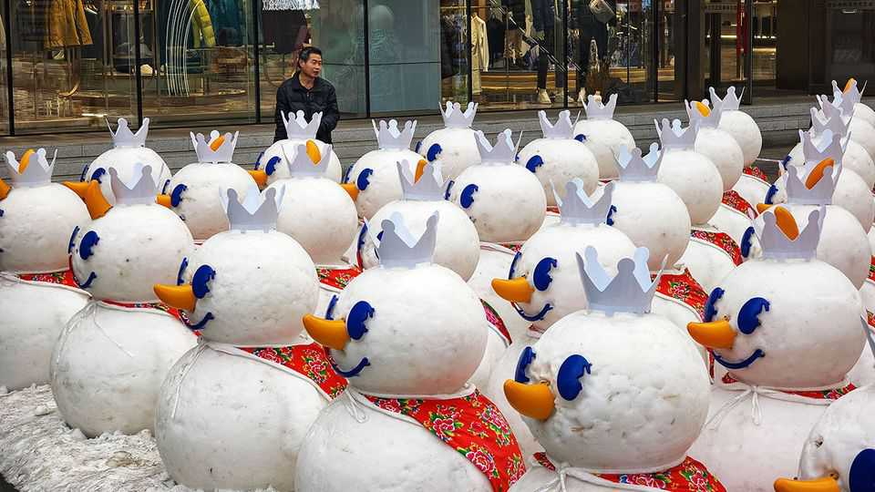

A franchise revolution is stirring in China
It is bringing buzzy retail brands to every corner of the country—and beyond

Nov 12th 2026
Yang Guofu spent much of the 1990s running from the chengguan, a dreaded troop of goons with the authority to rough up street vendors in the name of tidier cities. At the time he was grilling squid from a cart in a north-eastern town. Since then Mr Yang has turned his business into a global restaurant franchise with more than 7,000 outlets. His company, Yangguofu, dishes up a spicy Chinese soup known as malatang. Most of its shops are in China, but it has expanded to more than 20 other countries, opening in London and Rome last year, and in Luxembourg last month, far from the reach of the chengguan.
Mr Yang is part of an oddly timed retail revolution. Consumer spending in China is by most accounts miserable; retail sales grew by a lousy 1.1% in September, year on year. Once-popular Western brands are struggling. And yet walk down the street in a typical mid-size city in China and you are likely to see dozens of new retail shops wherever you look. There are myriad milk-tea outlets. On the streets of Nanchang, a south-eastern city, every corner seems to have a GoodMe selling teas and treats. Snack shops, such as Busy Ming, which peddles a wide variety of sweets, crisps and dried meats, are almost as numerous. The snow-man mascot of Mixue, a popular cold-drinks franchise, is now ubiquitous.
The growth of these businesses has been striking. Between 2023 and 2025 China’s 300 largest food- and drinks-franchises may have opened more than half a million outlets. That is roughly five-times the number opened in America during its franchising heyday between 1964 and 1969, when McDonald’s and Holiday Inn first took off. Today Chinese brands such as Mixue, Busy Ming and JI Hotel control some of the world’s largest franchise networks in their industries. The explosive growth required at least 100bn yuan ($15bn) in fresh capital in 2025, The Economist reckons, much of which came from household savings.
Until recently consolidation of China’s retail sector has been tedious. It is made up of millions of small-time entrepreneurs, many of whom run single-shop enterprises in small cities. In 2018 just 13% of restaurants were part of a corporate chain. But by 2025 that rate had shot to 25%, a sign these entrepreneurs have been signing up to franchises in droves. Hotels, an industry once dominated by dingy independent businesses built into housing units, have consolidated even faster.
A handful of factors have come together to make this possible. Chief among them is the honing of China’s distinctive franchising model. American fast-food giants make most of their revenues from royalties and rents paid by franchisees. McDonald’s, for example, owns many of the properties from which its burger joints operate; last year rents provided nearly 40% of its revenue. China franchisors, by contrast, act more like suppliers. They source raw materials and use sophisticated logistics networks to provide them at low prices to franchisees. They also sell equipment. These are the source of nearly all Mixue’s revenue, for example. Only in the past few years have such supply chains become sufficiently mature in China.
Ferocious competition in China has been another factor. Tepid consumer demand in recent years means that margins are razor thin for most retail businesses. That makes scale essential, and one way to achieve it is to open as many shops as possible with the help of franchisees. The brands, in turn, must keep license fees and royalties low in order to recruit new shop owners.
This model, which helps to lower prices, suits China’s reluctant spenders. Cotti, a coffee chain that has opened 18,000 shops since 2022, charges nothing upfront to its franchisees. Yangguofu asks for just 8,888 yuan to open one of its shops, and then an annual management charge of 5,000. The cost of renting the outlet, refurbishing it and stocking it with the brand’s equipment is covered by the franchisee. The main financial arrangement between Yangguofu and its restaurant operators is for the soup base that goes into its malatang, sales of which account for about 90% of the company’s revenue.
The final ingredient is capital. Funding retail enterprises in China is notoriously difficult. For years the central government has frowned on retail brands raising public capital. It would rather funds be channeled into favoured industries, such as chipmaking and artificial intelligence. Since 2022 retail businesses have managed to grab less than 2% of the total equity-capital raised on mainland Chinese bourses.
China’s ascendant retail brands have instead been built on household savings. Not long ago Chinese workers poured their savings into the property market. At its peak in 2021 up to 80% of household wealth was tied up in the value of flats. But a popping of the property bubble that occurred around that time has meant fewer funds flowing to the sector. Much wealth has ended up in bank deposits, but more than ever it is going into franchise outlets, says Chen Luo of Bank of America.
Many of these franchises are going global. As of the end of last year the top 50 Chinese food- and beverage-retailers were thought to have opened at least 6,800 overseas shops cumulatively. These outlets are important because margins are often juicier outside China. Extending supply chains to other countries can be difficult, but some are trying. One Chinese hotel chain has just started shipping room modules to Europe in a bid to make its hotels there cheaper to construct and more uniform.
Back home, the unbridled growth of franchises has not been without its challenges. Shops have been closing rapidly even as many more open up. More than 2,500 Mixue outlets appear to have been shut last year. Brands are grappling with inconsistencies in operational standards and divergent business philosophies among their franchisees, says Zhu Danpeng, an industry analyst. Rapid growth has made quality control difficult. Tianlala, one rapidly expanding tea-shop chain, acknowledged such shortcomings this year after numerous complaints surfaced online. It has forcibly shut many stores. Growing a franchise is one thing. Sustaining it may prove another. ■